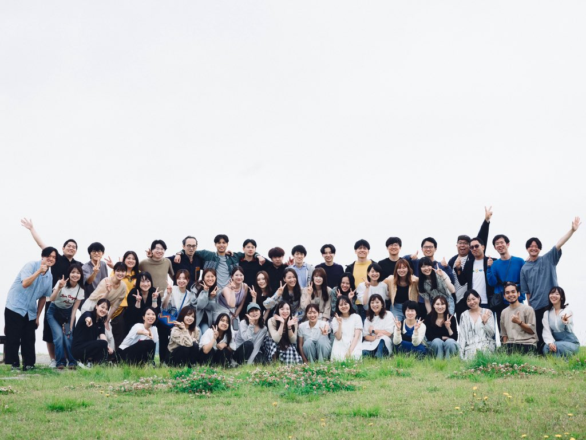

「いま、何かを変えたい」と思う人。「まあ、このままでいいか」と思う人。どちらにも共通するのは、どこか満たされない気持ち。
家と職場を往復する日常。なんとなく過ぎていく毎日に大きな不満はないけれど、どこか物足りない。
そんな「今」を、「旅」と「仲間」は揺さぶってくれる。旅は、当たり前を超えるきっかけになり、一人ではたどり着けない場所も、仲間となら行ける。
POOLO（ポーロ）は「旅と人生をつなぐ、大人の学び」をコンセプトとした、校舎の無い学びの場です。2019年に開校、世界中を旅する20代・30代が全国から集まり、現在1,200名以上が参加するコミュニティとなっています。
